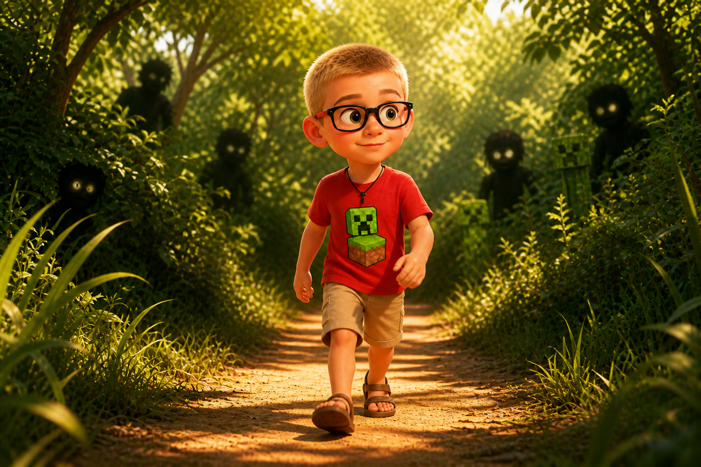
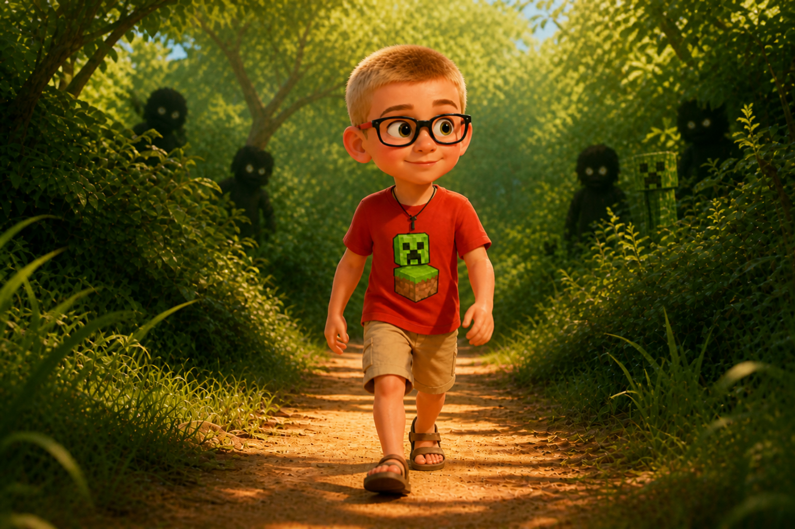
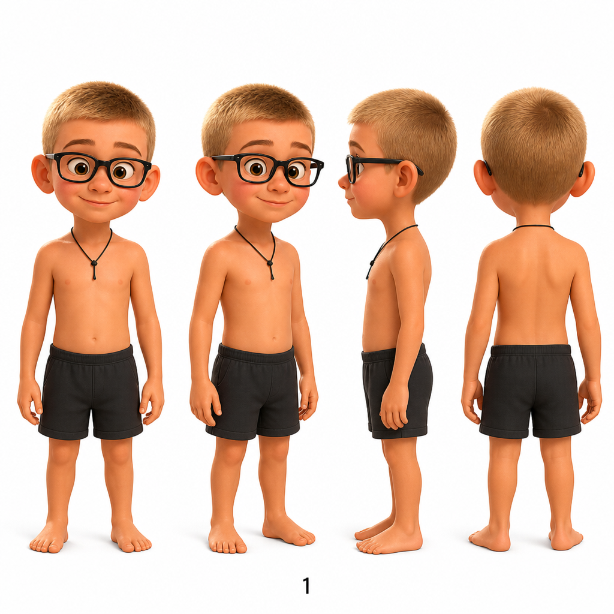
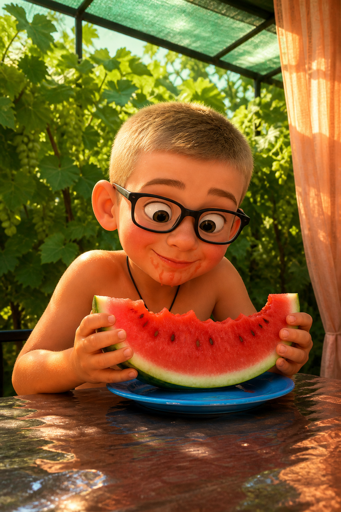
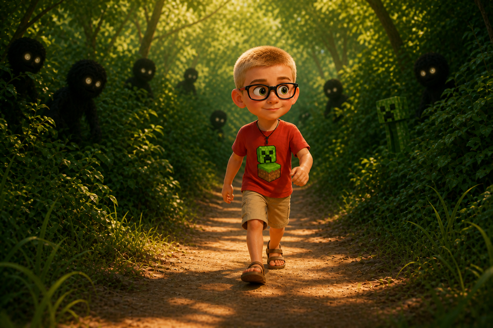

Разворот 01
История в нескольких кадрах
Один герой, одна тропинка, несколько мгновений — вставьте свои фото вместо примеров.




Шаблон
Как подставить свои фото
- Положите изображения в папку
photo-album/assets/ - Замените файлы
cover.png,page-01.png… или обновите пути вindex.html - Поменяйте подписи в блоках
figcaption - Измените название альбома в блоке
Альбоми заголовок «Летние кадры»
Рекомендуемый размер обложки: 1920×1080. Для портретов удобнее квадрат или 3:4.